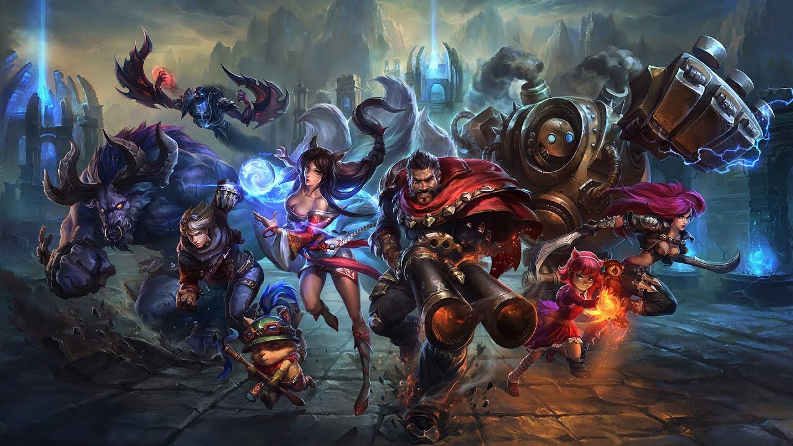

Undertale:
Undertale - gra RPG utworzona w roku 2015 przez Toby'iego Fox'a.
Gra polega na kierowaniu dzieckiem które spadło do podziemia
pełnego potworów. Zadaniem jest wydostac się z poddziemia
przez barierę jednak podczas podróży do bariery napotykamy
wielu przeciwników których możemy zabijać lub być dla nich
przyjaznym i się z nimi zazprzyjaźnić.
Five Night's at Freddy's
Five Night's at Freddy's - gra RPG utworzona w roku 2014 prez Scott'a Cawthon'a.

W grze jesteśmy strażnikiem nocnym w pizzeri Freddy Fazbear's
Pizzeria jest specjalna ponieważ, w lokalu dzieci zabawiają
animatroniki które grają na instrumentach i śpiewają.
Jednak w nocy animatroniki sa niebezpieczne więc ukrywasz
w swoim pomieszczeniu i bronisz się do 6 rano aby przeżyć
League of legends
League of Legends - gra MOBA utworzona w roku 2009 przez Riot Games.

Jest to gra multiplayer. W grze są dwie pięcio osobowe drużyny.
Zadaniem drużyn jest stanie się silnym i zniczyć przeciwną bazę
W grze poza pokonywaniem przeciwników są także smoki oraz
różne stwory. Poza grą główną są też minigry. W grze można
zdobywać unikatowe skórki oraz dodatki do bohaterów.